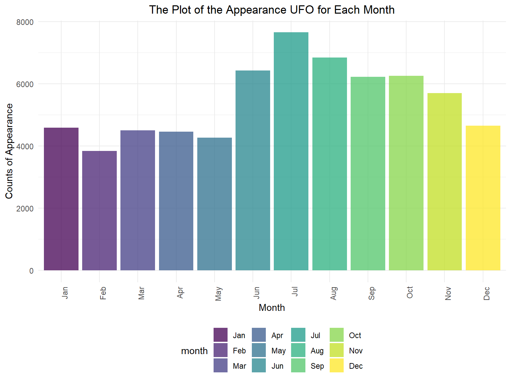

UFO in USA
Visualization of UFO in USA
The goal of this part is to explore whether there exist any association between the shape of UFOs and their appearance in the U.S., as well as to detect if there is any potential correlation between shape of UFOs and their encounter length time.
The Distribution of UFO Shape in the U.S
The light is the most frequent shape of UFO
Boxplot showing the distribution of the UFO Shape Observed in US .
### Boxplot showing the distribution of the UFO Shape Observed in US
ufo =
ufo_data %>%
#separate(date_time, into = c( "date","time"), sep = " " ) %>%
separate( date, into = c("month","day","year"), sep = "/") %>%
filter(country == "USA",year >= 1950) %>%
group_by(state) %>%
count(ufo_shape) %>%
arrange(desc(n)) %>%
ungroup %>%
mutate(
ufo_shape = factor(ufo_shape),
ufo_shape = forcats::fct_reorder(ufo_shape, n)) %>%
ggplot(aes(x = ufo_shape, y = n, group = ufo_shape)) +
geom_boxplot(aes(color =ufo_shape)) +
theme(axis.text.x = element_text(angle = 300)) +
labs(
title = "Boxplot Showing Distribution of the UFO Shape Observed in the U.S.",
x = "UFO Shape",
y = "Number"
)
ufoComment: According to this plot, we can see that the light UFO shape was sighted most often, and the changed shape was the least often according to their medium value. Some of the most common sighted UFO shapes are light, trianle, circle, unknown, other, and fireball, disk, and sphere. Some of the least common sighted UFO shapes are changed crescent, delta, flare, hezagon, pyramid and round.
After seeing the distribution of shape and UFO sighting frequency, we are tryint to explore whether the frequency of UFO shape changes by day and night. In general, the UFOs are more likely to be observed during night and the shape of light is the most frequent shape during night as indicated by the plot below.
Times of Appearance for Each Shape of UFO (by day and night)
ufo_day_night_shape =
ufo_data %>%
separate(date, into = c("month","day","year"), sep = "/") %>%
separate(time, into = c("hour","minute"), sep = ":") %>%
mutate(hour=recode(hour, "00"="24")) %>%
filter(country == "USA") %>%
mutate(year_1 = case_when(year >= 1950 ~ "true",
TRUE ~"false")) %>%
filter(year_1 == "true") %>%
select(-year_1) %>%
mutate(hour = as.numeric(hour)) %>%
mutate(night_day = case_when(18 <= hour & hour <= 24~ "night",
1 <= hour & hour <= 6 ~ "night",
TRUE ~ "day")) %>%
group_by(ufo_shape, night_day) %>%
summarize(count_shape = n()) %>%
ggplot(aes(x = ufo_shape, y = count_shape, group = night_day)) +
geom_col(aes(fill = night_day), alpha = .75, position = position_dodge(1)) +
scale_fill_manual(
values = c("lightblue","lightpink"),
labels = c("day","night")
) +
theme(axis.text.x = element_text(angle = 90, hjust = 1)) +
labs(title = "Times of Appearance for Each Shape of UFO (by day and night)",
y = "counts",
x = "UFO Shape")
ufo_day_night_shape
The spagetti plot here confirms that UFOs are more likely to appear during night.
Numbers of appearance of UFO in each hour by month
plot_us_month = ufo_data %>%
#separate(date_time, into = c( "date","time"), sep = " " ) %>%
separate( date, into = c("month","day","year"), sep = "/") %>%
filter(country == "USA",year >= 1950) %>%
separate(time, into = c("hour", "minute"), sep = ":") %>%
mutate(hour = paste0(hour, ":00-", hour, ":59")) %>%
select(-minute) %>%
mutate(month = month.name[as.numeric(month)]) %>%
group_by(hour, ufo_shape) %>%
summarize(n = n()) %>%
ggplot(aes(x = hour, y = n, color = ufo_shape)) +
geom_line(aes(group = ufo_shape)) +
theme(axis.text.x = element_text(angle = 90, hjust = 1)) +
labs(
title = "Number of UFO in Each Hour by Month in US",
x = "Hour",
y = "Number"
)
# display the plot
plot_us_month
Conclusion: 1):The most frequent shape of UFO is light; 2):The UFO is more likely to appear during night.
Can we take a guess that light is most frequent shape because majority of sighting occured during the nighttime? Is there a association between these two variables?
Month/Year vs. encounter length time
## USA
ufo =
ufo_data %>%
separate( date, into = c("month","day","year"), sep = "/")
ufo %>%
filter(country == "USA", year >= 1950, encounter_length <6000) %>%
select(year, month, encounter_length) %>%
mutate(year = as.numeric(year),
month = as.numeric(month)) %>%
group_by(year,month) %>%
arrange(desc(month)) %>%
mutate(
ave_encountered_length = mean(encounter_length/60)) %>%
select(-encounter_length) %>%
ungroup() %>%
mutate(month = month.name[as.numeric(month)]) %>%
ggplot(aes(x = year, y = month)) +
geom_tile(aes(fill = ave_encountered_length), colour = "white") +
scale_fill_gradient(low = "lightyellow", high = "darkblue") +
scale_x_continuous(name="Years",
breaks = c(1950, 1955,1960,1965,1970,1975,1980,1985,1990,1995,2000,2005,2010,2015
), limits= c (1950,2015)) +
labs(
title = "Average UFO Encounter Length Compared among Months Across Time in USA ",
x = "Years",
y = "Month"
) +
theme(axis.text.x = element_text(angle = 300)) +
theme(plot.subtitle = element_text(hjust = 0.5))#shape vs. encounter length time
The violin plot of encounter length for each shape of ufo
The bar chart of the median of encounter length time for each shape of UFO
# tidy data
length_shape_data = ufo_data %>%
mutate(ufo_shape = factor(ufo_shape),
ufo_shape = forcats::fct_reorder(ufo_shape, encounter_length))
# violin plot
length_shape_data %>%
ggplot(aes(x = ufo_shape, y = encounter_length, group = ufo_shape)) +
geom_violin(aes(fill = ufo_shape), color = "cornsilk4", alpha = 0.4) +
theme(axis.text.x = element_text(angle = 300)) +
stat_summary(fun.y = median, geom = "point", color = "darksalmon", size = 3) +
labs(title = "The Violin Plot of Encounter Length Time for Each Shape of UFO",
y = "Encounter Length of Time",
x = "UFO Shape")
# tidy data for the bar chart
median_length_shape_data = ufo_data %>%
group_by(ufo_shape) %>%
summarize(median_length = median(encounter_length),
count = n()) %>%
filter(count > 100) %>%
arrange(desc(median_length)) %>%
ungroup()
# bar chart
median_length_shape_data %>%
ggplot(aes(x = ufo_shape, y = median_length, fill = ufo_shape)) +
geom_bar(stat = "identity") +
theme(axis.text.x = element_text(angle = 300)) +
labs(title = "The Bar Chart of Median of Encounter Length Time for Each Shape of UFO",
y = "Median of Encounter Length Time",
x = "UFO Shape")
The violin plot here doesn’t actually indicate much because the existence of outliers in several shapes, but we also can see that the medium (indicated by the pink dots) most of UFO encounter time length regardless of their shapes are small.
The bar chart is a more in-depth view on median of UFO encounter length by shape. The median for the changing shape has the largest median (slightly over 400 seconds), and the smallest median of UFO encounter length is flash (slighter fewer than 50 seconds).
The Median Length Time for Each Shape of UFO (by day and night)
Whether the relationship between shape and the length time would change by time
ufo_day_night_length =
ufo_data %>%
# separate(date_time, into = c( "date","time"), sep = " " ) %>%
separate(date, into = c("month","day","year"), sep = "/") %>%
separate(time, into = c("hour","minute"), sep = ":") %>%
mutate(hour=recode(hour, "00"="24")) %>%
filter(country == "USA") %>%
mutate(year_1 = case_when(year >= 1950 ~ "true",
TRUE ~"false")) %>%
filter(year_1 == "true") %>%
select(-year_1) %>%
mutate(hour = as.numeric(hour)) %>%
mutate(night_day = case_when(18 <= hour & hour <= 24~ "night",
1 <= hour & hour <= 6 ~ "night",
TRUE ~ "day")) %>%
group_by(ufo_shape, night_day) %>%
summarize(median_length = median(encounter_length),
count = n()) %>%
filter(count > 100) %>%
ggplot(aes(x = ufo_shape, y = median_length, group = night_day)) +
geom_col(aes(fill = night_day), alpha = .75, position = position_dodge(1)) +
scale_fill_manual(
values = c("lightblue","lightpink"),
labels = c("day","night")
) +
theme(axis.text.x = element_text(angle = 90, hjust = 1)) +
labs(title = "The Median Length Time for Each Shape of UFO (by day and night)",
y = "median length",
x = "UFO Shape")
ufo_day_night_length
The plot did not display any particular pattern or trend over the shape of UFO, hence we conclude that there is no association between encounter length time and UFO shape.
UFO Appearance in Each Month
ufo_month_counts_plot =
ufo_data %>%
# separate(date_time, into = c( "date","time"), sep = " " ) %>%
separate(date, into = c("month","day","year"), sep = "/") %>%
filter(country == "USA") %>%
mutate(year_1 = case_when(year >= 1950 ~ "true",
TRUE ~"false")) %>%
mutate(month = forcats::fct_relevel(month, c("1","2","3","4","5","6","7","8","9","10","11","12"))) %>%
mutate(month = recode(month,"1"="Jan","2"="Feb","3"="Mar","4"="Apr","5"="May","6"="Jun","7"="Jul","8"="Aug","9"="Sep","10"="Oct","11"="Nov","12"="Dec")) %>%
filter(year_1 == "true") %>%
select(-year_1) %>%
group_by(month) %>%
summarize(count_month = n()) %>%
ggplot(aes(x = month, y = count_month)) +
geom_col(aes(fill = month), alpha = .75, position = position_dodge(1)) +
theme(axis.text.x = element_text(angle = 90, hjust = 1)) +
labs(title = "The Plot of the Appearance UFO for Each Month",
y = "Counts of Appearance",
x = "Month")
ufo_month_counts_plot
According to the plot here, the number of appearance by month of UFO is lower during the first half of the year and higher during the second half of the year.
The frequency of UFO appearance is higher after June, and peaks at July.